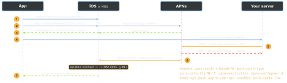

ios-platform · folio
In one line: Your server never talks to the phone: it POSTs JSON over HTTP/2 to APNs, addressed by a device token (one app install on one device, one environment) and authenticated by your key. The app only asks permission, obtains and uploads the token, and reacts to delivery.
Download PDF Print view LaTeX source


How it works
- Token auth (.p8), preferred: one key for all your apps and both environments, never expires. The server signs a JWT (ES256;
kid= key id,iss= team id,iat), reuses it and refreshes every 20–60 min. Certificate (.p12): one per app, expires yearly. - Authorization (
UNUserNotificationCenter):.alert .sound .badge..provisional(iOS 12): no prompt, lands quietly in Notification Center, user decides later..criticalAlert: ignores mute/Focus, needs an Apple-approved entitlement. Time-sensitive is an interruption level (passive · active · time-sensitive · critical, iOS 15) set in the payload + capability; it breaks through Focus. Check withgetNotificationSettings. - Alert push: push-type
alert, priority 10. Background (silent): only"content-available":1, push-typebackground, priority 5, needs theremote-notificationbackground mode. The app wakes indidReceiveRemoteNotification(…)for ~30 s and must call itsfetchCompletionHandler. - Service Extension (NSE): separate process, runs only for a visible alert with
"mutable-content":1; ~30 s indidReceive(_:withContentHandler:)to decrypt, rewrite or attach media (UNNotificationAttachment).serviceExtensionTimeWillExpire()ships the best attempt. Content Extension: custom expanded UI, picked byUNNotificationExtensionCategory. - Categories: register
UNNotificationCategory+UNNotificationAction(.foreground,.destructive, text input) at launch. Payload"category"picks one; the tap arrives asresponse.actionIdentifier.
Example
// didFinishLaunching: set the delegate BEFORE it returns
let c = UNUserNotificationCenter.current(); c.delegate = self
c.requestAuthorization(options: [.alert, .sound]) { _, _ in }
app.registerForRemoteNotifications() // token even if denied
func application(_ a: UIApplication,
didRegisterForRemoteNotificationsWithDeviceToken t: Data) {
api.upload(t.map { String(format: "%02x", $0) }.joined()) }
func userNotificationCenter(_ c: UNUserNotificationCenter,
willPresent n: UNNotification) async
-> UNNotificationPresentationOptions { [.banner, .sound] }
func userNotificationCenter(_ c: UNUserNotificationCenter,
didReceive r: UNNotificationResponse) async {
router.open(r.notification.request.content.userInfo) }Payload (≤ 4 KB; VoIP 5 KB)
{"aps":{"alert":{"title":"Door","body":"Opened"},
"sound":"default","badge":3,"category":"DOOR",
"mutable-content":1,"interruption-level":"time-sensitive"},
"route":"/door/7"} // own keys beside "aps"
{"aps":{"content-available":1}} // silentTest: xcrun simctl push booted <bundle-id> x.apns, or drag a .apns file onto the Simulator; on a device, Apple’s Push Notifications Console or curl --http2.
Traps
- Device token ≠ .p8 key: the token addresses the install, the key authenticates the server.
- Works from Xcode, fails in TestFlight: Xcode builds use the sandbox host, TestFlight/App Store use production. Tokens differ, so you get
BadDeviceToken. - Silent pushes are best-effort: throttled (a few per hour), coalesced, delayed in Low Power Mode, and never delivered to an app the user force-quit.
- NSE “never runs”: no
mutable-content, no visible alert, or it crashed on its tight memory limit (the original is shown). - Foreground: nothing shows unless
willPresentreturns options. - The token can change (restore, reinstall, new device). Re-register every launch.
token.descriptionis not the hex string. - Permission is only for alerts. The token and silent pushes work without it.
APNs answers
| 200 | accepted | — |
| 400 | bad request (BadDeviceToken, BadTopic…) | fix, do not retry |
| 403 | ExpiredProviderToken, InvalidProviderToken | new JWT |
| 410 | Unregistered — token no longer valid | delete the token |
| 413 | payload too large | shrink |
| 429 | too many requests (same token) | back off |
| 500 · 503 | APNs error · unavailable | retry later |
Remember
Ask · Register · Upload · Send · Deliver. The key names the sender; the token names the phone.